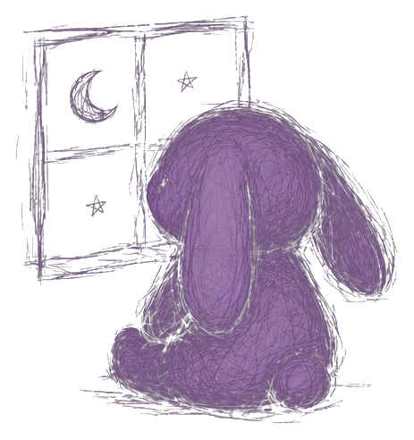

07.05.25
entrada 3 de 4
aún me extrañas?
pensé que estábamos destinados
lo siento por no saber perdonar
a veces pienso que cuando te sueño
tú también lo haces
a veces pienso que durmiendo podemos hablar
a veces quisiera volver el tiempo atrás
ojalá que nunca me vuelvas a llamar